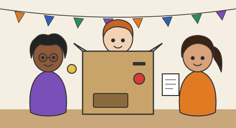

Automaten im Alltag
Mit einem KI-Tutor lernen
Ein KI-Tutor erklärt dir diese Seite und hilft dir bei den Aufgaben. Wähl deinen Assistenten:
Mit Claude öffnen Mit ChatGPT öffnen Mit Mistral Vibe öffnen
Du nutzt dein eigenes Konto beim Anbieter. Der Assistent ist kein Angebot von lernapps.net: lernapps liefert nur Inhalte und Aufgaben. Die Wahl gilt für alle Seiten, nur auf diesem Gerät.
Mias erster Saft

© CC-BY-4.0Der Saftautomat der 6b. Jona sitzt im Karton und ist der Automat, Mia kauft, Selin schreibt mit.
Schulfest der 6b. Die Klasse hat einen Saftautomaten aus einem Karton gebaut. Ein Saft kostet 2 €, der Automat nimmt nur 1-€-Münzen. Jona sitzt im Karton und ist der Automat. Selin schreibt mit, was passiert. Mia wirft eine Münze ein und drückt den Knopf. Es kommt kein Saft. Auf dieser Seite findest du heraus, warum ein Automat auf denselben Knopf einmal so und einmal anders reagiert.
Aufgabe
Lösung
Es ist erst 1 € im Automaten. richtige Antwort
Ein Saft kostet 2 €. Mit einer Münze ist erst die Hälfte bezahlt.
Der Knopf ist kaputt.
Der Knopf funktioniert. Jona merkt, dass gedrückt wurde, aber das Geld reicht noch nicht.
Mia hat zu schwach gedrückt.
Wie fest man drückt, ist dem Automaten egal. Es kommt auf das Geld an.
Man muss den Knopf zweimal drücken.
Auch ein zweites Drücken bringt nichts, solange nur 1 € drin ist.
Der Automat gibt erst einen Saft, wenn 2 € drin sind. Mia muss noch eine Münze einwerfen.
Jona spielt den Automaten
Hier spielst du Mia. Drück „Münze“ oder „Knopf“. Auf dem Zettel im Karton steht, was Jona sich gerade merkt. Im Fach unten erscheint, was herauskommt. Drück den Knopf einmal bei 1 € und einmal bei 2 €. Wirf auch einmal eine dritte Münze ein.
Jona merkt sich: 0 € drin
Ausgabe: nichts
Bisher: 0 € drin
Ein Karton-Saftautomat mit Jonas Zettel. Am Anfang steht darauf „0 € drin“. Was passiert:
- Münze bei 0 € oder 1 €: Jona behält sie und merkt sich 1 € mehr.
- Münze bei 2 €: Die Münze kommt zurück.
- Knopf bei 0 € oder 1 €: Nichts passiert.
- Knopf bei 2 €: Ein Saft fällt heraus, danach merkt sich Jona „0 € drin“.
Mit JavaScript drückst du selbst „Münze“ und „Knopf“.
Was sich der Automat merkt
Zweimal derselbe Knopf: einmal kommt nichts, einmal ein Saft. Der Unterschied steht auf Jonas Zettel. Das EVA-Bild zeigt, was hineinkommt und was herauskommt. Schaust du das Gerät als Automat an, zählt auch, was es sich gerade merkt. Das heißt sein Zustand. Bei einer Eingabe kann sich der Zustand ändern: Nach einer Münze steht auf dem Zettel 1 € mehr.
- Automat
Ein Automat reagiert auf Eingaben und merkt sich dabei etwas. Was er tut, hängt von der Eingabe und von dem ab, was er sich gemerkt hat.
- Zustand
Der Zustand ist das, was sich ein Automat gerade merkt, zum Beispiel „1 € drin“.
Merke
Was ein Automat tut, hängt von zwei Dingen ab, von der Eingabe und von seinem Zustand. Im selben Zustand reagiert er auf dieselbe Eingabe immer gleich.
Aufgabe
Lösung
Richtige Antwort: Die Aussage stimmt nicht.
Beim Saftautomaten gibt der Knopf bei 2 € einen Saft, bei 1 € nichts. Die Reaktion hängt von der Eingabe und vom Zustand ab. Nur im selben Zustand ist sie immer gleich.
Automat spielen
Spielt den Saftautomaten zu zweit, ohne Computer:
- Eine Person ist der Automat. Sie hat einen Zettel, auf dem „0 € drin“ steht.
- Die andere Person kauft. Sie sagt „Münze“ oder „Knopf“.
- Der Automat schaut auf seinen Zettel, sagt, was herauskommt, und schreibt den neuen Betrag auf.
- Tauscht nach fünf Eingaben. Wem passiert ein Fehler?
Übung
Aufgabe
Drei Beispielaufgaben, jede mit ihrer Lösung:
Aufgabe Nr. 1
Auf Jonas Zettel steht „2 € drin“. Mia wirft eine Münze ein. Was passiert?
Tipp
Schau zuerst auf den Zettel: Wie viel Geld ist schon drin? Dann auf die Eingabe.
Lösung
- Es ist schon genug Geld drin. Die Münze kommt zurück, Jona merkt sich weiter „2 € drin“.
Richtige Antwort: Die Münze kommt zurück.
Aufgabe Nr. 2
Auf Jonas Zettel steht „1 € drin“. Mia drückt den Knopf. Was passiert?
Tipp
Schau zuerst auf den Zettel: Wie viel Geld ist schon drin? Dann auf die Eingabe.
Lösung
- 1 € reicht nicht für einen Saft. Jona merkt sich weiter „1 € drin“.
Richtige Antwort: Nichts passiert.
Aufgabe Nr. 3
Auf Jonas Zettel steht „1 € drin“. Mia wirft eine Münze ein. Was passiert?
Tipp
Schau zuerst auf den Zettel: Wie viel Geld ist schon drin? Dann auf die Eingabe.
Lösung
- Jona behält die Münze und schreibt „2 € drin“ auf seinen Zettel. Einen Saft gibt es erst beim Knopf.
Richtige Antwort: Nichts kommt heraus, Jona merkt sich mehr Geld.
Aufgabe Nr. 1
Aufgabe Nr. 1
Jonas Zettel zeigt am Anfang „0 € drin“. Dann kommen diese Eingaben: Münze, Knopf, Münze, Münze, Knopf. Was steht am Ende auf dem Zettel?
Saftautomat (Start: 0 € drin):
- 0 € drin – Münze → 1 € drin
- 0 € drin – Knopf → 0 € drin
- 1 € drin – Münze → 2 € drin
- 1 € drin – Knopf → 1 € drin
- 2 € drin – Münze → 2 € drin (Ausgabe: Münze kommt zurück)
- 2 € drin – Knopf → 0 € drin (Ausgabe: Saft fällt heraus)
Lösung
0 € drin: Münze → 1 € drin, Knopf → 1 € drin, Münze → 2 € drin, Münze → 2 € drin, Knopf → 0 € drin. → 0 € drin
Aufgabe
Lösung
Richtige Antwort: Fußgängerampel mit Knopf – wer Grün hat und ob schon jemand gedrückt hat; Aufzug – das Stockwerk, an dem man gerade einsteigen kann; Drehkreuz am Schwimmbad – ob schon bezahlt ist; Lampe mit Druckknopf – ob das Licht an ist
Jeder dieser Automaten reagiert auf dieselbe Eingabe verschieden, je nachdem, was er sich gerade merkt. Der Knopf an der Lampe schaltet ein, wenn sie aus ist, und aus, wenn sie an ist. Bei der Ampel sieht man nicht alles: Ob jemand gedrückt hat, merkt sie sich, auch wenn die Autos noch Grün haben.
Aufgabe
Lösung
„1 € drin“ richtige Antwort
Das merkt sich Jona auf seinem Zettel. Es bleibt so, bis die nächste Eingabe kommt.
„Münze einwerfen“
Das ist eine Eingabe. Sie passiert in einem Moment und kann den Zustand ändern.
„Knopf drücken“
Das ist eine Eingabe, wie die Münze. Was dann passiert, hängt vom Zustand ab.
„Saft fällt heraus“
Das ist eine Ausgabe. Sie kommt heraus, wenn der Automat reagiert. Er merkt sie sich nicht.
Ein Zustand ist, was der Automat sich merkt. Eingaben und Ausgaben passieren in einem Moment.
Wie geht es weiter?
Gut gemacht: Du weißt jetzt, warum Mia beim ersten Mal keinen Saft bekam, und du erkennst, was sich Automaten im Alltag merken. Jona braucht aber bald eine Pause. Auf der nächsten Seite schreibt Selin einen Plan, nach dem jedes Kind den Automaten spielen kann.
Fehler gefunden oder eine Idee für diese App?